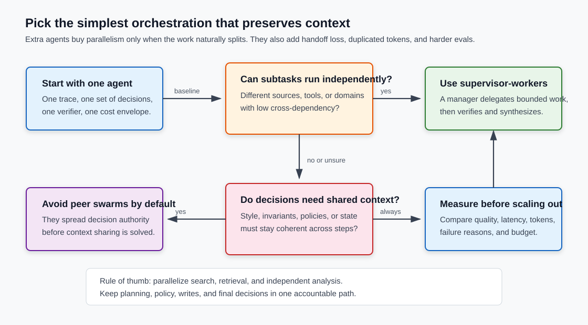

Multi-Agent Orchestration Patterns: When One Agent Is Enough
Adding agents is easy. Preserving the decisions they make is the hard part.
Multi-agent systems look like the obvious next step once a single agent starts hitting context limits or slow serial tool calls. Sometimes they are. More often, they are a way to spend more tokens while spreading the needed context across workers that no longer see the same task.
TL;DR: Start with one agent. Split into multiple agents only when the task has independent branches, separate tool domains, or enough value to pay for extra tokens and evaluation work. Use supervisor-worker patterns before peer swarms. Measure quality, latency, tokens, and failure reasons on the same task set before claiming that orchestration helped.

The useful topologies
"Multi-agent" is too broad to be a design. The topology matters.
A single-agent loop is still the default production shape: one model loop plans, calls tools, observes results, and decides the next step. It can use many tools and many skills, but there is one coherent trace.
A supervisor-worker system keeps one manager in charge. The supervisor decomposes work, sends bounded tasks to workers, receives results, verifies them, and writes the final answer. Anthropic's Research system is the clearest public production example: a lead research agent creates parallel subagents for different search branches, then synthesizes their findings.
A pipeline has a fixed order: planner -> retriever -> extractor -> verifier -> writer. This is often more reliable than a free-form agent team because control flow is explicit. It is not glamorous, which is a useful property in production systems.
A peer swarm lets agents hand off to each other or negotiate dynamically. It is flexible, but it also spreads decision authority. Unless the system has strong state management and termination rules, it is the easiest topology to debug last.
A blackboard or shared-workspace pattern lets agents write artifacts into a shared store: files, tables, notes, patches, citations, test results. The coordinator passes references instead of copying every intermediate token through chat history. This pattern is underrated because it reduces the "telephone game" between agents.
LangGraph's multi-agent docs map the same space with network, supervisor, supervisor-as-tool, hierarchical, and custom workflows. OpenAI's Agents SDK exposes handoffs as tools with input filters and handoff history controls. CrewAI exposes sequential and hierarchical processes. The frameworks differ, but the design question is the same: who owns context, who can make decisions, and what state moves between steps?
The context problem
The core failure mode is not that subagents are dumb. It is that they make decisions with partial history.
Cognition's "Don't Build Multi-Agents" makes this point from the coding-agent side. If one subagent makes a style decision, another makes a conflicting state decision, and a final agent has to merge the outputs, the system did not parallelize the task. It created conflicting assumptions.
This shows up in less visual tasks too:
| Task shape | Bad split | Failure mode |
|---|---|---|
| Code change | backend agent + frontend agent | APIs, naming, UX, and tests drift apart |
| Policy workflow | eligibility agent + action agent | action runs without the policy context |
| Incident response | metric agent + log agent + runbook agent | each sees a different root cause |
| Research report | one subagent per source | synthesis becomes source stitching, not reasoning |
The problem gets worse because actions carry implicit decisions. A tool call is more than output. It also says what the agent believed was relevant, what it ignored, and which path it chose. If the next agent only sees a summary, it inherits the result without the reasoning pressure that produced it.
That is why "just summarize the worker output" is not a complete coordination strategy. Summaries are useful, but they discard exactly the details that tend to matter during debugging: failed searches, rejected options, source quality, uncertainty, and constraints discovered halfway through the run.
Where multi-agent systems work
Multi-agent orchestration works best when the task is broad, parallel, and high value.
Anthropic's multi-agent research-system write-up is the positive case worth studying. Their Research feature uses a lead agent plus parallel subagents that search independently, compress findings, and return them to the lead. Anthropic reports that this architecture outperformed a single Claude Opus 4 agent by 90.2% on an internal research evaluation. They also explain the bill: multi-agent research can use about 15 times as many tokens as a normal chat interaction.
That trade is reasonable for some research tasks. If the question has many independent branches, a single agent has to search them serially. Subagents can explore in parallel with separate context windows. The system is buying coverage.
Good fits tend to have these properties:
- The branches are independent enough to run without constant coordination.
- The answer benefits from breadth, not only a single deep reasoning chain.
- Workers can return structured artifacts, not vague prose.
- The supervisor can verify or reconcile worker outputs.
- The task value justifies higher token spend and slower evaluation.
Examples: market maps, broad literature scans, vendor comparisons, source triangulation, red-team scenario generation, and independent test-case generation.
Bad fits are the opposite: coupled writes, UI polish, code edits across shared interfaces, policy-sensitive actions, low-latency support flows, and anything where one missed constraint changes the meaning of the whole task.
Measure the topology, not the story
There is a simple trap in multi-agent evals: the multi-agent system often gets more test-time compute. Then the team compares it to a single agent with a smaller budget and declares victory.
That is not an architecture result. It is a budget result.
The paper Single-Agent LLMs Outperform Multi-Agent Systems on Multi-Hop Reasoning Under Equal Thinking Token Budgets is useful because it attacks this exact problem. Its result is not "multi-agent never works." It is more specific: when reasoning-token budgets are matched, single-agent systems can match or beat multi-agent systems on the tested multi-hop reasoning tasks. That is the kind of control production teams need.
The MAST paper is the matching failure-mode view. It studies multi-agent traces and groups failures into system design problems, inter-agent misalignment, and verification or termination problems. Those categories should sound familiar if you have built agent workflows. They are harness failures more than model failures.
So the eval table for an orchestration decision needs at least this:
| Metric | Why it matters |
|---|---|
| Outcome quality | Did the task succeed? |
| Token usage | Did quality improve after normalizing for compute? |
| Latency | Did parallelism actually save wall-clock time? |
| Failure reason | Did the topology introduce new failures? |
| Verification rate | Did the system check worker outputs before using them? |
| Reproducibility | Does the result survive repeated runs? |
If the multi-agent version wins only because it spends 4x tokens, that may still be a valid product choice. Just call it what it is.
A small offline benchmark
I added a runnable supporting demo at:
work/demo/2026-06-12-multi-agent-orchestration/
Run it from that directory:
uv run demo.py
In this Codex sandbox, the global uv cache was not writable, so I used:
UV_CACHE_DIR=../../../.uv-cache PYENV_VERSION=system uv run demo.py
The demo is intentionally deterministic and offline. It does not pretend to benchmark model intelligence. It isolates the coordination mechanics:
- one continuous trace for a single agent,
- manager overhead plus verification for supervisor-workers,
- handoff drift for a peer swarm.
The core shape in demo.py is small:
def supervisor_workers(task: Task) -> RunResult:
"""A manager delegates to workers, then verifies and synthesizes outputs."""
workers = max(2, min(5, round(task.parallelism / 2)))
worker_tokens = workers * (520 + 55 * task.facts + 35 * task.nuance)
manager_tokens = 900 + 140 * workers + 65 * task.dependencies
verification_tokens = 420 + 80 * workers
tokens = worker_tokens + manager_tokens + verification_tokens
parallel_bonus = 0.018 * min(task.parallelism, 8)
coordination_penalty = 0.018 * task.dependencies + 0.012 * task.nuance
verification_bonus = 0.04 if task.dependencies >= 6 else 0.02
quality = 0.90 + parallel_bonus + verification_bonus - coordination_penalty
The smoke run produced:
topology quality tokens latency cost failures
-------------------- ------- ------ ------- ------- --------
single-agent 0.928 2646 39.0 $0.0053 0
supervisor-workers 0.825 6574 46.4 $0.0131 4
swarm-handoffs 0.641 7878 39.4 $0.0158 7
This task mix favors the single agent because several tasks have high dependency and nuance scores. That is the point. If your workload looks like schema migrations, policy decisions, and code refactors, extra agents may add coordination loss before they add useful parallelism.
Change the task set toward broad independent research and the supervisor-workers topology should improve. If it does not, the architecture is probably not the bottleneck.
Production rules that hold up
First, parallelize search before decisions. Let subagents gather facts, inspect source families, run independent tests, or draft options. Keep policy decisions, writes, approvals, and final synthesis in one accountable path.
Second, pass artifacts instead of only summaries. A worker should write a table, patch, citation list, trace, or test result. The supervisor should receive a pointer plus a compact summary. This preserves detail without forcing every token through the chat transcript.
Third, bound the delegation. Give workers a goal, allowed tools, output schema, stop condition, and budget. Anthropic's research-system post describes early failures where agents spawned too many subagents or searched endlessly. That is not an edge case. That is the default behavior of an underspecified coordinator.
Fourth, avoid peer swarms until you have a reason. A supervisor-worker tree is already hard enough to test. A network where any agent can hand off to any other agent multiplies the state space and makes termination harder.
Fifth, make the eval topology-aware. A single final-answer judge is too weak. You need trajectory checks: Did the supervisor create duplicate work? Did a worker ignore constraints? Did synthesis cite the right source? Did any agent declare success without verification?
Sixth, normalize for budget. Measure quality at equal token budgets and also at equal latency budgets. Then decide whether the more expensive system is worth the product gain.
A decision checklist
Use one agent when:
- The task depends on a coherent chain of decisions.
- Writes touch shared state, shared code, or shared UX.
- The task is latency-sensitive.
- The eval cannot yet catch coordination failures.
- A single agent plus better tools, memory, or context compression passes the test.
Use supervisor-workers when:
- The task has independent branches.
- Workers can produce structured artifacts.
- The supervisor can verify outputs before synthesis.
- Token spend is acceptable.
- The multi-agent run beats the single-agent baseline after budget normalization.
Use a fixed pipeline when:
- The steps are known ahead of time.
- Reliability matters more than flexibility.
- Each step has a narrow contract.
- You want deterministic replay.
Use peer swarms only when:
- The domain genuinely needs dynamic negotiation.
- Shared state and termination are engineered, not hoped for.
- You have trace-level evals for handoff failures.
Most production systems should live in the first three buckets.
Key Takeaways
- Multi-agent orchestration is a trade: parallelism and specialization in exchange for token cost, context loss, and harder evals.
- The default should be one agent with strong tools, memory, and verification.
- Supervisor-worker systems are the practical multi-agent starting point because they preserve one accountable synthesis path.
- Peer swarms are fragile unless the system has explicit shared state, budgets, and termination rules.
- Do not compare a multi-agent run to a single-agent run without normalizing for tokens, latency, and verification quality.
References
- Anthropic, How we built our multi-agent research system
- Cognition, Don't Build Multi-Agents
- LangGraph, Multi-agent systems docs source
- OpenAI Agents SDK, Handoffs
- CrewAI, Processes and Crews
- Microsoft, Agent Framework documentation
- Anthropic, Claude Code subagents
- Cemri et al., Why Do Multi-Agent LLM Systems Fail?
- Tran and Kiela, Single-Agent LLMs Outperform Multi-Agent Systems on Multi-Hop Reasoning Under Equal Thinking Token Budgets